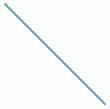
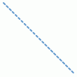
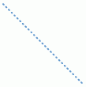
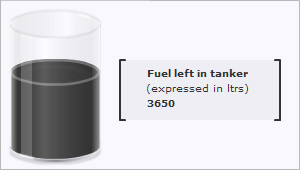

Annotation > Line |
||||||||||||||||||||||||||||||||||||||||||
Let us take a look at the Line Annotation here. A line annotation looks as under: |
||||||||||||||||||||||||||||||||||||||||||
|
||||||||||||||||||||||||||||||||||||||||||
|  | ||||||||||||||||||||||||||||||||||||||||||
| The XML to create the above is: | ||||||||||||||||||||||||||||||||||||||||||
| <chart> ... <annotations> <annotationGroup id='Grp1' > <annotation type='line' x='200' y='200' toX='300' toY='300' color='639ACE'/> </annotationGroup> </annotations> ... </chart> |
||||||||||||||||||||||||||||||||||||||||||
| In the code above, we have set the annotation type to line, specified the starting x and y co-ordinates and the ending x and y co-ordinates and also a color for the line. | ||||||||||||||||||||||||||||||||||||||||||
| Setting the thickness of the line | ||||||||||||||||||||||||||||||||||||||||||
| The thickness of the line can be defined using the thickness attribute. thickness='5' would give: | ||||||||||||||||||||||||||||||||||||||||||
| Dashed line | ||||||||||||||||||||||||||||||||||||||||||
| The line can be made dashed by setting dashed='1'. | ||||||||||||||||||||||||||||||||||||||||||
|  | ||||||||||||||||||||||||||||||||||||||||||
| The dash properties - dash length & gap can be customized using the dashLen and dashGap attributes. Setting dashLen='1' and dashGap='4', we would have: | ||||||||||||||||||||||||||||||||||||||||||
|  | ||||||||||||||||||||||||||||||||||||||||||
| The final XML for the line (as we have above would be): | ||||||||||||||||||||||||||||||||||||||||||
| <chart> ... <annotations> <annotationGroup id='Grp1' > <annotation type='line' x='200' y='200' toX='300' toY='300' color='639ACE' dashed='1' dashLen='1' dashGap='4'/> </annotationGroup> </annotations> ... </chart> |
||||||||||||||||||||||||||||||||||||||||||
| The various attributes using which the line annotation can be customized are: | ||||||||||||||||||||||||||||||||||||||||||
|
||||||||||||||||||||||||||||||||||||||||||
| Application | ||||||||||||||||||||||||||||||||||||||||||
|  | ||||||||||||||||||||||||||||||||||||||||||
| The XML for the above is: | ||||||||||||||||||||||||||||||||||||||||||
<chart ... > |
||||||||||||||||||||||||||||||||||||||||||